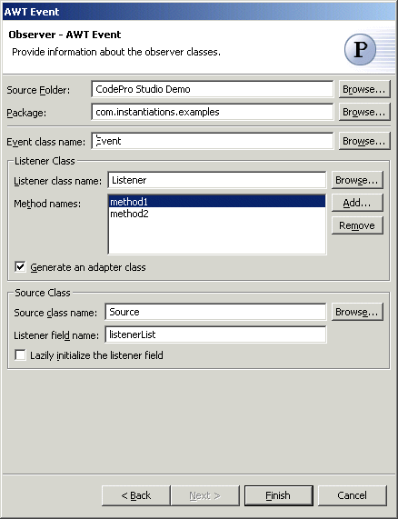

Observer Pattern
Also known as: Dependents, Publish-Subscribe
The  Observer Pattern define a one-to-many dependency between objects so that when one object
changes state, all its dependents are notified and updated automatically. A common
side-effect of partitioning a system into a collection of cooperating classes is the need
to maintain consistency between related objects. You don't want to achieve consistency by
making the classes tightly coupled, because that reduces their reusability.
Observer Pattern define a one-to-many dependency between objects so that when one object
changes state, all its dependents are notified and updated automatically. A common
side-effect of partitioning a system into a collection of cooperating classes is the need
to maintain consistency between related objects. You don't want to achieve consistency by
making the classes tightly coupled, because that reduces their reusability.
Wizard

| Option | Description | Default |
| Source folder | Enter a source folder for the new class. Either type a valid source folder path or click Browse to select a source folder via a dialog. | The source folder of the element that was selected when the wizard was started. |
| Package | Enter a package to contain the new class. Either type a valid package name or click Browse to select a package via a dialog. | The package of the element that was selected when the wizard was started. |
| Event class name | Type or click Browse to select an event class. | <Event> |
| Listener class name | Type or click Browse to select a listener class. | <Listener> |
| Method names | Click Add to enter methods for the listener to implement. | <blank> |
| Generate an adapter class | Determines whether an adapter class will be generated | <true> |
| Source class name | Type or click Browse to select an source class. | <Source> |
| Listener field name | Type or select the name of the field that will contain the listener list | <listenerList> |
| Lazily initialize the listener field | Determines whether the listener field should be lazily initialized | <false> |
Applicability
Use the Observer pattern in any of the following situations:
- When an abstraction has two aspects, one dependent on the other. Encapsulating these
aspects in separate objects lets you vary and reuse them independently.
- When a change to one object requires changing others, and you don't know how many
objects need to be changed.
- When an object should be able to notify other objects without making assumptions about who these objects are. In other words, you don't want these objects tightly coupled.
Additional Resources
http://c2.com/cgi/wiki?ObserverPattern
http://www.cmcrossroads.com/bradapp/javapats.html#Observer